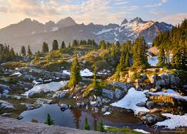

I love trying all kinds of food. Oregon and California are home to a wide variety of dishes. A few of my favorites include:
Portland has access to a variety of seafood and as a result, the variety of sushi is also vast. Not a lot of places can be compared to Oregon-raised salmon.
The West coast is an ideal place for many fruits to thrive in. Oregon alone has dozens of different types of fruit farms, both u-pick and for sale. Some of the most popular kinds are:
To find more info on fruit farms in Oregon, click here
I've abandoned cable for years and years now but that doesn't mean I gave up on TV shows. The rise of streaming services means you can still enjoy your favorite shows without wading through the cesspool of ads nowadays. Recently, Netflix and Hulu have met all my TV needs. I personally enjoy comedy shows the most but will occasionally give the popular shows a try. A few of my favorites include:
A timeless comedy series that showcases the seemingly mundane American workplace. The boss is an erratic and occasionally insuffereable individual who somehow also carries his branch to success time and time again.
One of the newer shows I've watched and loved every moment of it. If you've ever heard of "Arrested Development", the premise is very similar: a once very wealthy family suddenly finds themselves broke and are left with nothing and must assimilate to their new lifestyle. Schitt's Creek takes place in a tiny town called Schitt's Creek which the father bought his son as a joke before they became unexpectedly broke.
I am a big fan of all sorts of music. From classical to Alternative/Indie. Following are some examples.
There are several great composers from the baroque era. Here are some standouts:
Perhaps best known for his brandenburg concertos
Just about everyone is familiar with his 4 Seasons
Contary to popular belief Jethro is not one of the band members. This band is fronted by flautist Ian Anderson. He is known for some of the tastiest flute solos known to rock and roll, even being knodded to in movies like
Again, Pink is not one of the band members.
Led by Annie Clark, this band is known for its unique style. They have done collaborations with such musicians as George Byrne of the Talking heads, and Dave Grohl from Nirvana and The Foo Fighters
They are known for their ethereal harmonies, and mythical lyrics
There are many wonderful places to go camping in North America, including:
Home to some of the most stark mountain scenes in America, the Colorado Rockies is a dream destination for all kinds of outdoor activities, from Hunting to Skiing
Home to some 202,000 acres of Wilderness area, many of which are found in the central Cascades.
